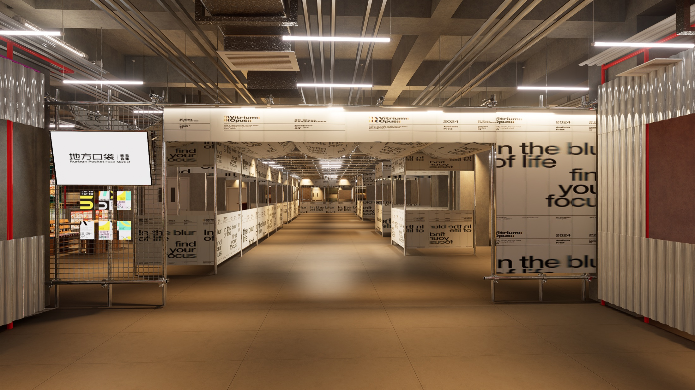
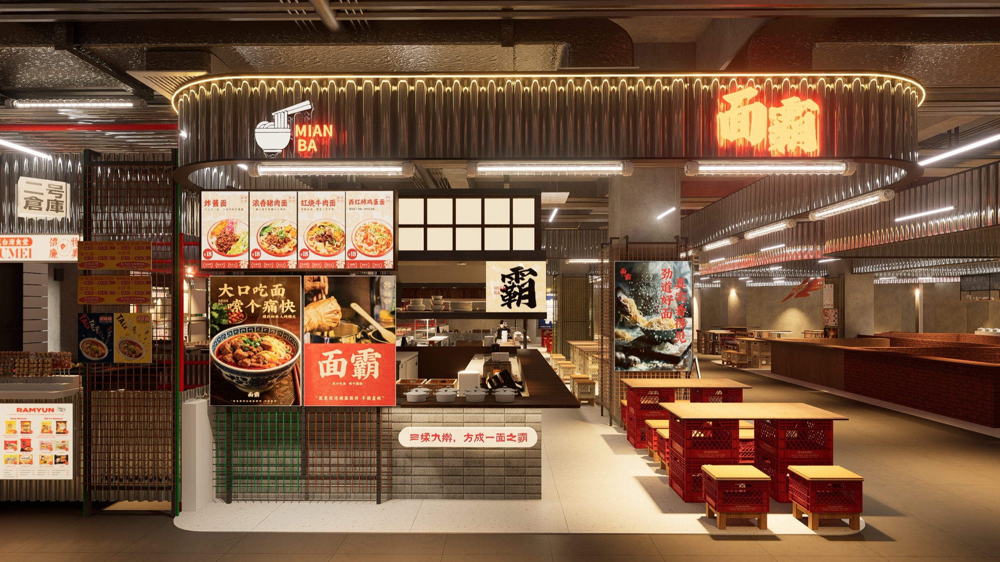

项目助手
我已经读取当前项目资料。你可以直接说想推动什么，我会边处理边把结果生成到右侧。

当前项目地方口袋美食食集 准备开始第一轮测试 2026年8月 · 演示数据使用了项目定位、本月目标、现有内容、商户配合要求和品牌类型，共 11 项已有信息。
当前仍缺 3 项关键信息。方案会明确标记“待确认”，不会当作已经发生。
同一份项目信息已经整理成四种可直接查看和继续修改的结果。
所有尚未发生的结果都显示为“还没记录”或“待确认”，没有使用推测代替实际数据。
当前为内部草稿 v0.1。你可以继续在下面提出修改，也可以直接导出。
v0.1内部草稿已经检查
先选择 3 项已有内容，小范围发布并记录反馈；没有结果前不扩大投入。

3 项内容 · 2 个平台 · 1 次现场记录
商户名称待填写 · 任务内容已准备

先选择 2–3 家有明确产品、人物故事并愿意配合现场的商户。
方向和材料已准备 · 品牌名称待填写
有明确产地、人物和产品故事，最适合先联系。
适合一起做主题、限定产品和现场活动。
适合游客购买、内容展示和现场零售。